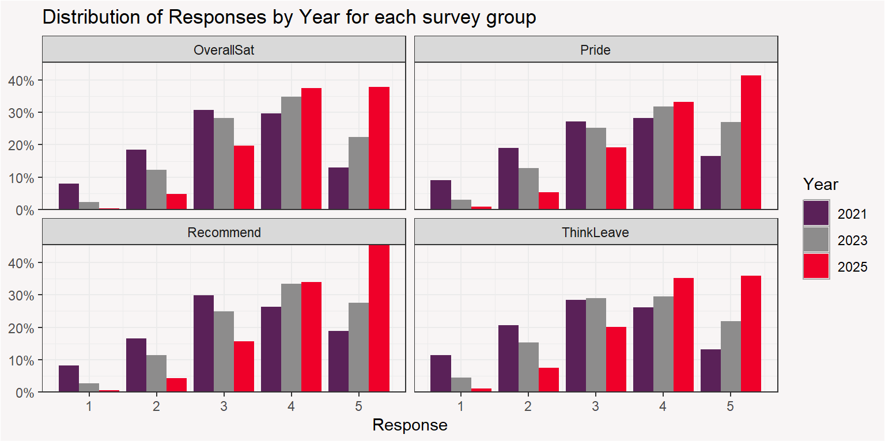

Year | SummaryStat | OverallSat | Pride | Recommend | ThinkLeave |
|---|---|---|---|---|---|
2021 | |||||
MedianResponse | 3.0 | 3.0 | 3.0 | 3.0 | |
AvgResponse | 3.2 | 3.2 | 3.3 | 3.1 | |
2023 | |||||
MedianResponse | 4.0 | 4.0 | 4.0 | 4.0 | |
AvgResponse | 3.6 | 3.7 | 3.7 | 3.5 | |
2025 | |||||
MedianResponse | 4.0 | 4.0 | 4.0 | 4.0 | |
AvgResponse | 4.1 | 4.1 | 4.2 | 4.0 |
Survey Responses
Additional Analysis: Correlation to Voluntary
It would be interesting to add a view into if the survery responses are more connected to voluntary or involuntary turnover.
- It’s possible that both groups are unsatisfied but it you would want to know if one of the survery response is more connected to a certain group or not.
- It’s also possible that the involuntary turnover employees were statisfied and there were more caught off-guard as a result of their terminations
Survey Responses
Note
The Engagement Data file contains associate responses to four survey items.
- OverallSat_[Year] – Overall, I am extremely satisfied with Jackson as a place to work.
- Recommend_[Year] – I would recommend Jackson as a great place to work.
- ThinkLeave_[Year] – I rarely think about looking for a job at a different company.
- Pride_[Year] – I feel proud to work at Jackson.
Engagement survey items were rated using a 5-point rating scale:
- 5 = Strongly Agree
- 4 = Agree
- 3 = Neither Agree nor Disagree
- 2 = Disagree
- 1 = Strongly Disagree
Survey Response Results

We see a shift in responses from more negative in 2021 -> more positive in 2025
Responses vs Turnover
All 4 of the survey repsonses are decently correlated with terminations.
- Because the correlations are negative, we would say that in general that the lower the response (closer to strongly disagree) that the higher the likelihood of an employee exiting.
Surv_OverallSat | Surv_Recommend | Surv_ThinkLeave | Surv_Pride |
|---|---|---|---|
-0.498771 | -0.4852137 | -0.4771458 | -0.4333766 |
Correlation of Survey Response to Termination